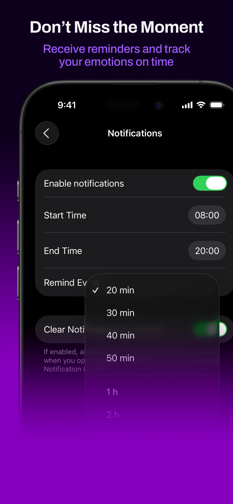
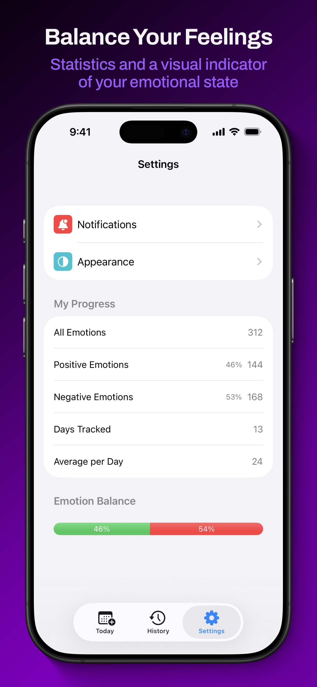

Quick check-ins
Log emotions in the moment so your day is reflected as it actually felt, not just how you remember it later.
Inner Pulse helps you check in with yourself during the day, save those moments, and come back later to see how your emotional patterns shift over time.

Check in with how the day feels right now and keep the entry flow quick.

Add a new emotion entry in the moment instead of trying to remember it later.

Review patterns and see how your emotional balance shifts over time.

Use reminders when you want a gentler nudge to check in during the day.

Adjust the app to fit your routine without overcomplicating the experience.
Log emotions in the moment so your day is reflected as it actually felt, not just how you remember it later.
Review your entries over time and get a clearer sense of what has been present lately and what keeps repeating.
The interface stays out of the way so the focus stays on reflection, not on learning a complicated system.